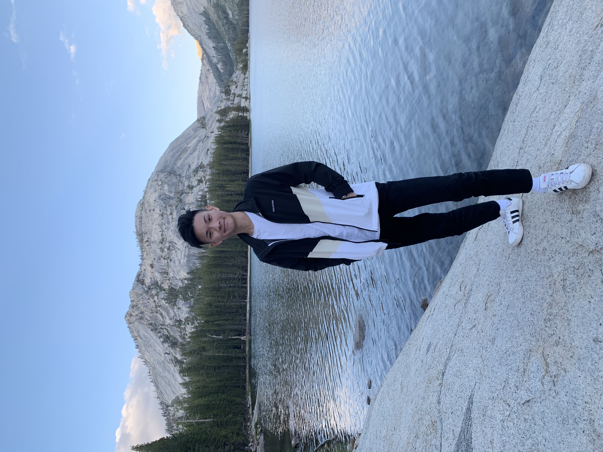

<
Hello everyone, I’m currently serving National Service under the Singapore Armed Forces till 2023 where I will enrolling into the Lee Kong Chian Business School under the Singapore Management University, taking up the Bachelor of Business Management Program. Prior to enlistment, I graduated with a Diploma with Merit in Hospitality & Tourism Management at Temasek Polytechnic in April 2021. As an optimist, I believe that there is a positive side to everything in life. I live by a quote from Albert Einstein "In the midst of every crisis, lies great opportunity".
Since young, i have been very enthusiastic and passionate in the tourism industry and particularly the aviation sector. Thankfully i was given the opportunity to intern at Changi Airport as a Changi Youth Ambassador in September 2020 during the Covid-19 Pandemic. Despite the travel restrictions developing, i was able to meet people from different parts of the world and improve their experience at the airport. However, I had also seen the impact of the Covid-19 Pandemic at the airport as travel restrictions form and passenger arrivals dropped. But as an optimist, I believe that there is a positive side to everything in life. I live by a quote from Albert Einstein "In the midst of every crisis, lies great opportunity". Therefore, I am optimistic that the Travel & Tourism Industry will recover in a few years.